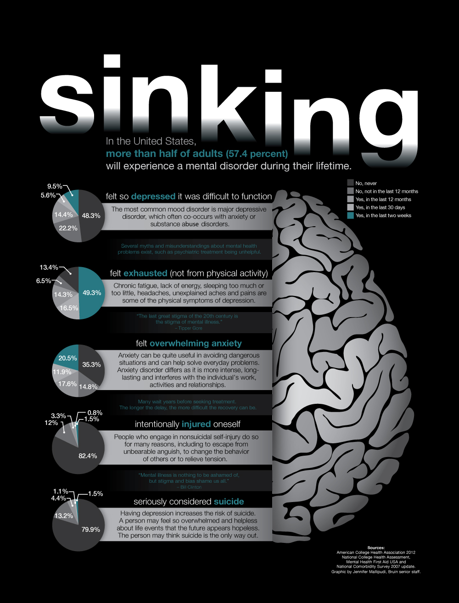
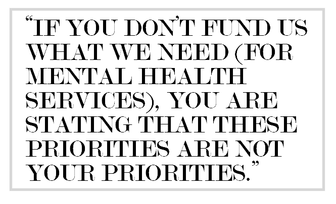

Update: At the time of printing, Devin Murphy held the post of Undergraduate Students Association Council President. Between the time of printing and the time the magazine was placed on stands, Murphy resigned from office.
The online version of this article has been updated to reflect this change.
Her attempt to take her own life in the February of her second year was not the first.
But it was the first time Savannah Badalich realized that she needed to seek out professional help for her depression and suicidal thoughts, which were weighing heavier on her each day as she tried to occupy herself with other things.
“I tried to make myself so busy that I didn’t think about things. By avoiding things, I just succumbed to my depression," said Badalich, who now serves as the Undergraduate Students Association Council Student Wellness Commissioner and spent the last year heading a campaign to stop sexual violence on college campuses.
She said her depression stemmed from her own sexual assault, and that she avoided counseling for months because she didn’t understand the connection between her trauma and her mental state.
“When I luckily survived, I realized that I needed help,” she said.
But a fear of being seen visiting a counseling center on campus and the even more powerful worry of her parents finding psychological services on their insurance claims kept Badalich from visiting UCLA Counseling and Psychological Services right away.
Instead, she drove several miles to visit the Valley Community Treatment Center in the nearby San Fernando Valley.
“I was very lucky that I had a car. Had I not, I don’t know what would have happened,” she said. “I don’t think I would have taken the bus. Any and all excuses to not go to counseling, I would have found them.”
Badalich said her own fear of seeking professional help made her wonder how many other students are experiencing similar hardships and do not have the resources to seek off-campus help like she did.
Decreasing the stigma of mental health services and encouraging UCLA students to seek out the help they need are some of the goals of the All of Us campaign that USAC launched this fall.
In her position as the Student Wellness Commissioner, Badalich is leading the educational portion of the campaign, but she said she is among students who need to learn more about their mental health resources available on or near campus.
“Putting on a mental health campaign doesn’t mean I’m immune,” Badalich said. “I’m still trying to figure out how to navigate CAPS and off-campus resources.”
Thousands of students slip quietly into the waiting room of the UCLA CAPS office each year, seeking help in the hidden facility tucked into the western walls of the John Wooden Center and off the beaten path of Bruin Walk.
In recent years, increased funding for CAPS on UCLA’s campus has been accompanied by a growing demand for services. CAPS has struggled to balance maintaining a robust staff and meeting the needs of the ever-expanding student body.
The number of visits each student can use is now limited to 10 per year. This limit has fluctuated between eight and 12 visits per year since 2012 because of high demand.
And wait times between appointments for a nonemergency could last up to a month, said TK Truong, a UCLA alumna and former co-director of Active Minds at UCLA. Active Minds is a national organization that educates college students about mental health.
Visits to CAPS are free for students with the University of California Student Health Insurance Plan and cost $15 for students without University health care.
CAPS caters to students from many different backgrounds, its services are confidential, and it is a good first step toward treating mental health concerns, Truong said.
“But if you need to see someone more regularly, CAPS isn’t the best place for you,” she added. The clinic provides referrals and information on external resources for students who need long-term therapy.
Despite the potentially long wait times and limited number of appointments, CAPS has worked to increase its services over the past few years.
A three-year grant, totaling $617,580, was provided through the California's Mental Health Services Act, or Proposition 63, which helped UCLA’s mental health specialists innovate and create new resources for students struggling with anxiety and depression. At the same time, an unexpected influx of visits forced the center to simultaneously cut the number of visits that students can obtain and stretch wait times for appointments over several weeks.
CAPS director Elizabeth Gong-Guy said the grant provided CAPS with resources specifically targeted toward a handful of initiatives: early intervention and suicide prevention, peer programming and technological support.
With those funds, spread over three years, CAPS provided an online screening for depression and suicide to more than 12,000 students, developed a mobile application for the clinic and increased funding for student-led events that worked to counter the stigma surrounding mental health concerns, Gong-Guy said.
But much of the work that CAPS has accomplished over the past three years through use of these funds came to a halt this past June, when the grant expired, she added. Small amounts of money remain, but the accounts are in the process of being closed, she added.
“Before Proposition 63, there were not adequate-enough services for acute mental health and drug rehabilitation,” said USAC President Devin Murphy.
The law provided significant funding for mental health programs across California, including at universities.
“But the funding from Proposition 63 (ended) this year, and now we’re asking where to find funding,” he said.
The decreased funding for comprehensive mental health resources on California college campuses comes at a time when students are suffering from serious mental health conditions in high numbers.
About half of students surveyed in the American College Health Association’s 2013 assessment of health on college campuses reported feeling overwhelming anxiety that interfered in their daily lives in the past year. Nearly a third reported experiencing debilitating depression and 8 percent said they had seriously considered suicide in the last year.

Student Wellness commissioner
(Agnijita Kumar)
In 2013, 8 percent of the total number of UCLA undergraduates enrolled equated to more than 2,200 students. Many more than this number visited the CAPS office for clinical services.
CAPS provided counseling and other services to 8,434 students in 2013, most of whom were undergraduates, Gong-Guy said. The clinic reaches about a fifth of the entire student body, and CAPS connected with 19 percent of undergraduates and more than 21 percent of graduate students in 2013.
With limits on the number of visits that a student can use and a high demand for services across the student body, some students said CAPS succeeds at intervening in a crisis but is not necessarily the best tool for prevention.
“UCLA tends to do well with intervention, but that’s not always the best way,” Murphy said.
When waits for appointments at CAPS span more than three weeks, mental health concerns can turn into a mental health crisis before a student can manage to see a therapist, Murphy added.
“We need to start thinking about (prevention) as a necessity,” he said. And to provide preventative mental health care, UCLA and the UC as a whole need to fund mental health more aggressively, he added.
Some students are avoiding CAPS altogether for fear of being turned away or subjected to disciplinary action, Badalich said.
“Students with suicidal ideation – when they talk about their thoughts, they could be 5150’d,” Badalich said.
Section 5150 of the California Welfare and Institutions Code allows peace officers or clinicians to place a person under involuntary psychiatric hold at a facility. Typically, the policy is applied to people who pose a threat to themselves or others.
Sometimes, students who voice suicidal thoughts on campuses across the state are involuntarily committed to a psychiatric ward to prevent them from taking their own lives.
But some students are voicing concerns that policies – like 5150 and the housing policy that permitted UCLA Residential Life to evict students who attempt or threaten to commit suicide until it was changed in late October – discourage people from seeking help.
UCLA does not adhere to the UC Office of the President’s model policy for involuntary withdrawal, which provides campuses with the ability to suspend a student who is considered a threat to himself or herself, said spokesman Tod Tamberg.
The university has no standard policy that it uses to determine the actions taken when a student voices suicidal thoughts. Each student struggling with depression and suicidal ideation is handled on an individual basis by professionals who are trained to act in these situations, he added.
Although Tamberg said UCLA regards the UCOP model policy as unfair and unproductive, UCLA Housing had a policy that allowed the removal of students who threaten or attempt to commit suicide until it was changed after questioning from Bruin reporters.
In a submission to the Daily Bruin, Gong-Guy and Suzanne Seplow, assistant vice chancellor for student development, said, “The policy (was) utilized primarily in instances where a student is seen as a demonstrable threat to the safety or well-being of other students in the residential community.”
Tamberg said The Bruin’s questions revealed inconsistencies in Residential Life's policy and UCLA’s practices and led directly to the removal of language about suicide. He added UCLA does not separate students from the university or university housing for mental health concerns.
The current Residential Life policy no longer specifically mentions suicide threats or attempts as grounds for dismissing students. The university did not publicize the amended policy.
Some students, including Badalich, said they are concerned that policies like the old Residential Life sanctions against suicide threats and the UC model policy for involuntary withdrawal might discourage students from seeking help even if they are not carried out on a regular basis.
“They fear the very resources that are meant to help them might hurt them,” Badalich said.
Badalich said she sought counseling off campus after her suicide attempt because she was worried that her mental health could be used against her if she utilized campus services.
The Office for Civil Rights, an agency under the U.S. Department of Education, has determined that some universities violated federal law by dismissing students from school without first attempting to provide reasonable accommodations for a legally protected disability.
“There are no categorical rules, and ultimately what is required will vary depending on the facts and circumstances of each individual student's situation,” said a spokesman from the U.S. Department of Education in an email statement. “These laws also prohibit colleges and universities from excluding a student from a program based on myths, fears or stereotypes about mental health-related disabilities.”
The Office for Civil Rights is currently working on a guide for universities to use to ensure that they are complying with federal laws, including Title II of the Americans with Disabilities Act and Section 504 of the Rehabilitation Act of 1973.
To address the concerns with mental health policies, funding and stigma on UC campuses, Murphy and Badalich are joining efforts with the other 12 USAC councilmembers in the All of Us campaign for mental health awareness.
The campaign launched at the onset of fall quarter and has a multifaceted approach to addressing mental health awareness at UCLA and the rest of the UC.
Murphy is heading the lobbying portion of the campaign, which focuses on advocating for more funding for mental health resources and targets the UC Board of Regents, UCOP and California state legislators.
former Undergraduate Students
Association Council president
(Neil Bedi)
“We want to start a conversation around mental health funding,” Murphy said.
He said the campaign is aiming to lobby the regents and state lawmakers in conjunction with UC President Janet Napolitano and student governments from other UC campuses.
“This should be a matter of truly shared governance. We should be lobbying together,” he said. “If we did that, it might provide stronger arguments (to fund mental health).”
Murphy said the issue of mental health does not exist in isolation for activists at UCLA. It is tied to the Invest in Graduation Not Incarceration, Transform Education campaign – which focuses on diminishing the school-to-prison pipeline in California – because spending less money on prisons would free up funds for mental health resources and support, he said.
Similarly, he said mental health touches on other issues, like immigration reform and lesbian, gay, bisexual and transgender inclusion. The communities affected by those social movements experience hardships that put them at risk for mental health concerns.
Mental health funding is an important cause among some UC officials. This fall, Chancellor Gene Block allocated $1.2 million to CAPS at the behest of the Student Fee Advisory Committee and added $1.4 million to hire 12 new professionals within the counseling center.
Moreover, university mental health advocates are drafting a mental health services fee proposal to present to the UC Regents to support mental health needs on all 10 UC campuses.
The details surrounding the possible fee are unclear, said Avi Oved, UC student regent-designate. Two models are being discussed, he added. One would institute a flat fee for all students that would be spread across the UC campuses. The other would create a base fee and then have a variable addition based on the needs of each campus.
Oved said the latter model would provide more flexibility for campuses to address their own distinct needs in effective ways. For example, he said UCLA does not need funds to focus on outreach, since CAPS already serves so many students. But at UC Riverside, a much smaller portion of the campus uses the counseling services that are available.
Murphy said he was concerned that there was not enough communication with students about the possible fee increase to generate support and understanding for the initiative. Students do not have a chance to offer alternatives to a fee, he added.
“When students see that (new fee), they see tuition hike after tuition hike,” Murphy said. “Seeing this as an issue without student input – without coming to us for solutions – is really disheartening.”
Still, the All of Us campaign will be working on advocating to the regents and state lawmakers in January for new sources of funding to support mental health resources on UC campuses.
“If you don’t fund us what we need (for mental health services), you’re stating that these priorities are not your priorities,” Murphy said.
The campaign does not just include lobbying the UC and the state for more mental health funding. Badalich said she is heading the educational portion of All of Us, which aims to decrease stigma and raise awareness of the mental health resources that exist at UCLA.
She said the campaign takes a three-prong approach, including awareness, education and advocacy, because focusing on awareness alone should be the “bare minimum.”
All of Us provides direction to resources for students who are suffering from mental health concerns, like depression or anxiety because of relationship stress, identity issues, money problems or academic pressures. The campaign’s website directs students that are seeking counseling to manage stress from any of these issues to CAPS.
“We are not professionals,” Badalich said of the students behind the the All of Us campaign. “Students should be telling their stories to someone trained and equipped to deal with those stories.”